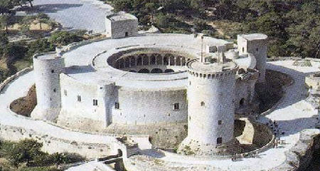

El emblemático castillo cuenta con un aspecto poco común gracias a su planta circular rodeada por
torres semicirculares. En el interior,
arcos de medio punto y bóvedas de crucería ofrecen un escenario de estilo gótico y medieval en el
que resulta sencillo imaginar grandes
eventos y pomposas celebraciones reales. Desde el patio de armas central se obtiene acceso a las
diferentes estancias en las que se guardaba
el material y donde se alojaba el personal de servicio, mientras que las de la planta superior
estaban dedicadas a las habitaciones de la familia real.
Desafortunadamente, el estado actual de las estancias es muy diferente a su estado original, ya
que no se conservan piezas del mobiliario original y las
huellas de los antiguos colores que antaño decoraban las estancias nobles han desaparecido con el
paso del tiempo. La mejor parte del castillo se encuentra
en la terraza superior, desde donde se obtienen inigualables vistas de la bahía de Palma y del
tupido bosque de pinos que rodea la fortificación..

Localización
Horarios y precio
El emblemático castillo cuenta con un aspecto poco común gracias a su planta circular rodeada por torres
semicirculares. En el interior,
arcos de medio punto y bóvedas de crucería ofrecen un escenario de estilo gótico y medieval en el que
resulta sencillo imaginar grandes
eventos y pomposas celebraciones reales. Desde el patio de armas central se obtiene acceso a las diferentes
estancias en las que se guardaba
el material y donde se alojaba el personal de servicio, mientras que las de la planta superior estaban
dedicadas a las habitaciones de la familia real.
Desafortunadamente, el estado actual de las estancias es muy diferente a su estado original, ya que no se
conservan piezas del mobiliario original y las
huellas de los antiguos colores que antaño decoraban las estancias nobles han desaparecido con el paso del
tiempo. La mejor parte del castillo se encuentra
en la terraza superior, desde donde se obtienen inigualables vistas de la bahía de Palma y del tupido bosque
de pinos que rodea la fortificación..